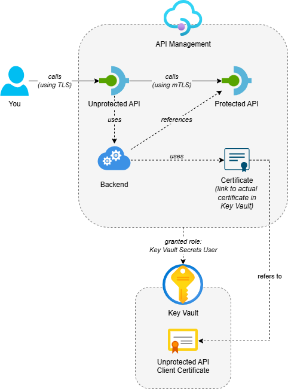
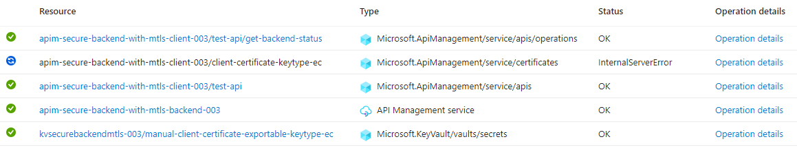

Securing backend connections with mTLS in API Management

This is the third post in a series on working with client certificates in Azure API Management. Throughout the series, I’ll cover both the validation of client certificates in API Management and how to connect to backends with mTLS (mutual TLS) using client certificates.
While Azure’s official documentation provides excellent guidance on setting up client certificates via the Azure Portal, this series takes it a step further. We’ll dive into using Bicep to automate the process.
Topics covered in this series:
- Validate client certificates in API Management
- Validate client certificates in API Management when it’s behind an Application Gateway
- Securing backend connections with mTLS in API Management (current)
In the previous posts, we covered how to validate client certificates in Azure API Management. In this post, we’ll focus on securing backend connections with mTLS in API Management.
Table of Contents
- Solution Overview
- Client Certificate in Key Vault
- Backend Configuration
- API Policy
- Considerations
- Conclusion
Solution Overview
I’ve created an Azure Developer CLI (azd) template called mTLS with Azure API Management and Application Gateway that demonstrates three scenarios: validating client certificates when calling API Management directly, validating them when API Management is behind an Application Gateway and securing connections from API Management to backend systems using mTLS. See the following diagram for an overview of the solution.

This blog post focuses on scenario 3: securing connections from API Management to backend systems using mTLS. In this scenario, a client calls the Unprotected API over regular TLS. The Unprotected API then calls the Protected API (introduced in the first post of this series) as a backend over mTLS, using a client certificate stored in Key Vault. This demonstrates how API Management can act as an mTLS client when communicating with mTLS-protected backends.
The template uses the Protected API in the same API Management instance as the backend. The same approach applies to any external backend that requires mTLS. Only the backend URL in the Bicep configuration would differ.
The setup for this scenario is shown in more detail in the image below:

The template includes self-signed certificates, but you can also use client certificates from a public CA. Using Generate and export certificates for point-to-site using PowerShell as a guide, I’ve created the following tree of certificates.

- APIM Sample Root CA: is the root CA for this sample
- APIM Sample DEV Intermediate CA: is intermediate CA for a ‘dev’ environment
- Valid Client: is registered in API Management as a valid client
- Unregistered Client: is NOT registered in API Management and should be blocked when explicitly checking client certificates
- Unprotected API: is used when the Unprotected API calls the Protected API using mTLS
- Expired Client: is an expired certificate for testing purposes
- Not Yet Valid Client: is a certificate that is valid in the future and used for testing purposes
- APIM Sample TST Intermediate CA: is intermediate CA for a ‘test’ environment
- Untrusted Client: can be used to test what happens when certificates from an untrusted intermediate CA are used
- APIM Sample DEV Intermediate CA: is intermediate CA for a ‘dev’ environment
The Unprotected API client certificate will be used in this scenario by the Unprotected API. You can find more details about the certificates here.
If you want to deploy and try the solution, check out the getting started section for the prerequisites and deployment instructions. To try out the implementation, follow the instructions in this demo.
Client Certificate in Key Vault
The Unprotected API needs a client certificate with a private key to authenticate to the Protected API backend. In Azure, Key Vault is the place to store these. For the sample template, all client certificates are imported into Key Vault in postprovision-import-client-certificates.ps1, including the one for the Unprotected API.
Once the certificate is available in Key Vault, it can be referenced from API Management through the Microsoft.ApiManagement/service/certificates resource:
resource keyVault 'Microsoft.KeyVault/vaults@2025-05-01' existing = {
name: keyVaultName
}
resource clientCertificateSecret 'Microsoft.KeyVault/vaults/secrets@2025-05-01' existing = {
name: 'dev-unprotected-api'
parent: keyVault
}
resource clientCertificate 'Microsoft.ApiManagement/service/certificates@2025-03-01-preview' = {
name: 'unprotected-api-client-certificate'
parent: apiManagementService
properties: {
keyVault: {
secretIdentifier: clientCertificateSecret.properties.secretUri
}
}
}
The Microsoft.KeyVault/vaults/secrets resource type is used to reference the certificate in Key Vault. There is no Microsoft.KeyVault/vaults/certificates resource type in Bicep, so referencing the secret is the only option. Even though the certificate is imported into Key Vault as a certificate, Key Vault also creates a secret with the same name, which can be referenced here.
API Management loads this certificate from Key Vault at runtime using a managed identity with the Key Vault Secrets User role.
With the certificate now available in API Management, the next step is to configure a backend that uses it during the mTLS handshake.
Backend Configuration
The authentication-certificate policy can be used in API Management to authenticate to a backend, but I prefer to use a backend resource instead. A backend can be reused and provides other options as well, like circuit breakers. It is configured using the Microsoft.ApiManagement/service/backends resource:
resource protectedBackend 'Microsoft.ApiManagement/service/backends@2025-03-01-preview' = {
parent: apiManagementService
name: 'protected-backend'
properties: {
description: 'The protected backend. Forwards requests to the Protected API in the same API Management instance.'
url: '${apiManagementService.properties.gatewayUrl}/protected'
protocol: 'http'
credentials: {
// The client certificate will be used for authentication when calling the backend API.
certificateIds: [
clientCertificate.id
]
}
tls: {
validateCertificateChain: true
validateCertificateName: true
}
}
}
The credentials.certificateIds array references the client certificate resource shown in the previous section. When API Management calls this backend, it presents that certificate during the mTLS handshake. The tls block ensures the backend’s server certificate is validated.
The backend URL points to the Protected API in the same API Management instance. For an external backend, this would simply be an external URL.
See unprotected-api.bicep for the full configuration.
API Policy
With the backend configured, wiring it up to an API operation is straightforward. The set-backend-service policy is all that’s needed:
<set-backend-service backend-id="protected-backend" />
The Unprotected API has been set up to accept all GET requests on /{*path} and forwards them to the protected-backend using this policy. This means a request to GET /unprotected/validate-using-policy is forwarded over mTLS to /protected/validate-using-policy.
And that’s all you need. See unprotected-api.xml for the full policy.
Considerations
There are some things to keep in mind when working with client certificates stored in Key Vault and used by API Management.
First, when creating or importing certificates in Key Vault, it’s preferred to not make the private key exportable. This is safer because it prevents the private key from being exported and the certificate from being misused. However, when using the certificate in API Management, the private key must be exportable. If you don’t make it exportable and deploy API Management, you’ll receive the following error:
Certificate with id 'client-certificate' does not contain private key.
Secondly, at the time of writing this post, API Management has a bug concerning certificates with key type EC. When deploying the Bicep template and referencing a certificate with this key type, the first deployment will succeed when the certificate resource is created in API Management. However, once the certificate resource exists, consecutive deployments will all fail with a 500 Internal Server Error response.
To reproduce this, create a certificate in Key Vault with key type EC and use it in the backend. Assuming the certificate resource already existed in API Management with the certificate with key type EC, the deployment will take much longer than usual. If you look at the deployment in the Azure Portal, you’ll see a running deployment with status InternalServerError. See the figure below.

I let the deployment run and it failed after running for over 2 hours due to a timeout. I’ve contacted Microsoft about this issue and they’ve informed me that it’s a known issue that they’re working on. Unfortunately, they can’t provide a timeline for when it will be resolved.
If you also encounter this issue, please upvote Support updating certificates generated in Key Vault (Bug) on the Azure Feedback Forum. Hopefully, this will speed up getting it fixed.
A workaround to prevent this issue is to use the @onlyIfNotExists decorator on the certificate resource, which tells Bicep to only deploy the resource if it doesn’t already exist. This way, the certificate resource is created on the first deployment and skipped on subsequent ones, avoiding the bug.
Conclusion
Compared to validating a client certificate in API Management, as covered in the previous posts, using a client certificate to connect to a backend is fairly easy to set up. You only need to create a client certificate in Key Vault and reference it in the backend configuration of API Management. The set-backend-service policy then takes care of forwarding requests with the certificate attached.
The main things to keep in mind are that the certificate’s private key must be exportable and that certificates with key type EC have a known bug in API Management at the time of writing. Other than that, the setup is straightforward.